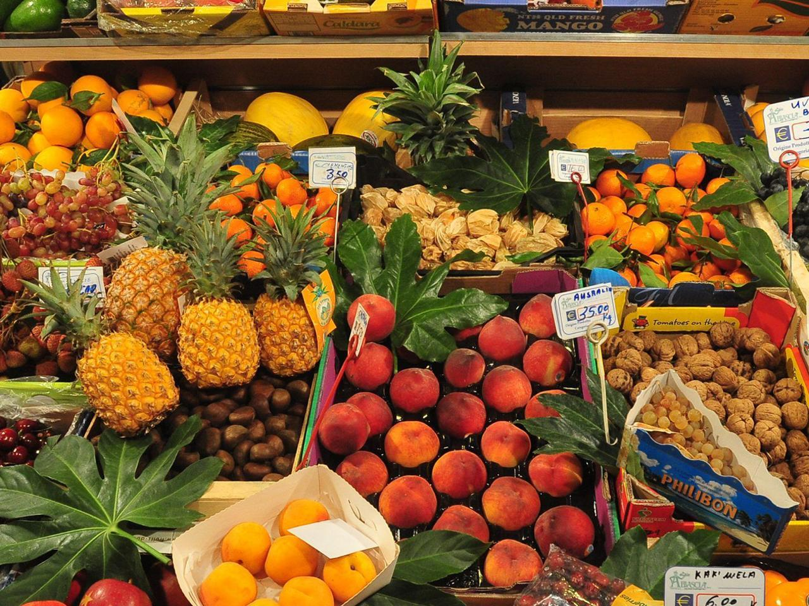

A Organicals busca reunir informações sobre o universo dos orgânicos e agregar especialistas e pesquisadores ao nosso quadro institucional. Estamos sempre gestando novas ações para alcançar o grande público e permitir o ingresso do varejo no esforço, para fortalecer e divulgar as boas práticas orgânicas. Com o crescimento do consumo de orgânicos, mais empresas querem aproveitar as oportunidades que isso gera. Por isso estamos buscando visibilidade e estatura para ocupar um espaço institucional de maior relevância. Nosso centro gravitacional é a causa dos orgânicos e suas contribuições ao meio ambiente, à saúde e ao bem-estar social. Nessa questão, a Organicals tem um papel institucional relevante e continuará a desempenhá-lo.
